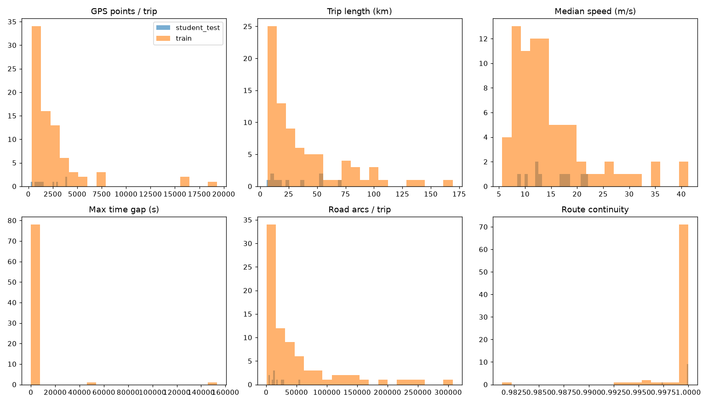
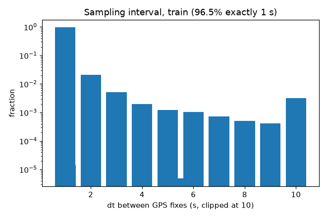
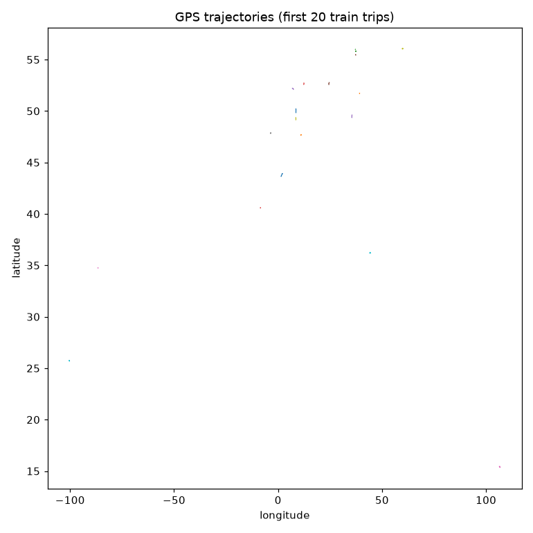
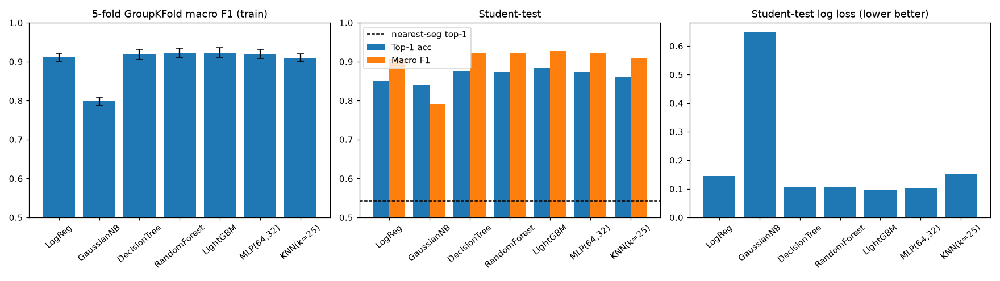

Snap noisy GPS to the road the car really drove
Blue dots are raw GPS fixes; the green line is the reference route. Toggle layers top-right.
GPS drifts onto wrong or parallel roads. Given the GPS track and the road network, we must find which road the car was on at each moment.
What the data looks like



No missing values, but large time gaps, GPS jumps and some off-route driving. Trips are spread over several continents (longitude -100° to 137°), so we convert to metres per trip instead of using degrees.
Candidates → features → classifier → HMM
- Labels: the route file is an ordered road list. Each GPS fix is matched to it in order (never going backwards).
- Features: distance, direction difference, speed, time gap, road length, position along road, junction degree…
- Why direction matters: 92% of roads exist in both directions at the same distance.
Nearest road gets only 54% because it can't tell a road from its opposite direction. Our heading feature fixes that.
Seven models, grouped cross-validation by trip
| Model | Family | CV macro F1 | CV top-1 | Test macro F1 | Test top-1 | Test log loss |
|---|---|---|---|---|---|---|
| Nearest-segment (baseline) | Heuristic | – | – | – | 54.2% | – |
| LogReg | Linear | 0.911 | 86.2% | 0.907 | 85.2% | 0.146 |
| GaussianNB | Probabilistic | 0.798 | 85.2% | 0.792 | 84.0% | 0.649 |
| DecisionTree | Tree | 0.919 | 87.0% | 0.922 | 87.6% | 0.105 |
| RandomForest | Ensemble/bagging | 0.922 | 87.4% | 0.922 | 87.3% | 0.106 |
| LightGBM | Boosting | 0.923 | 87.4% | 0.927 | 88.4% | 0.097 |
| MLP(64,32) | Neural net | 0.920 | 87.0% | 0.922 | 87.3% | 0.104 |
| KNN(k=25) | Instance-based | 0.910 | 86.1% | 0.910 | 86.1% | 0.152 |

CV = 5-fold GroupKFold on 80 train trips (a trip never appears in both train and validation). Test = 10 student-test trips. Top-1 = share of GPS fixes whose highest-scoring road is correct.
LightGBM is best: 88.4% top-1 vs 54.2% for nearest road, with the best log loss, and it's fast.
Plan to the final review
- Bayesian hyperparameter tuning of LightGBM (Optuna)
- HMM / Viterbi decoding for a connected route
- FastAPI backend on laptop 1, evaluator UI on laptop 2
- Technical report and GitHub repository
HMM result and live demo
Green = reference, purple = predicted route (HMM). Toggle "Classifier-only" in the layer menu to see the jumpy route without the HMM.
Open live demo UI (needs the API and UI running: run_api.bat + run_ui.bat)